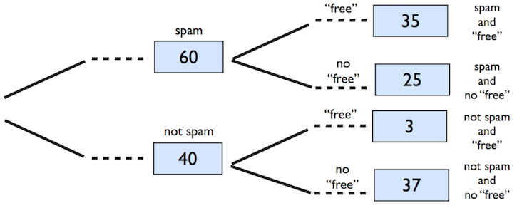

Bayesian inference
Data Science in a Box
layout: true
class: middle
Bayes’ Theorem
Free spam
.question[ You have 100 emails in your inbox: 60 are spam, 40 are not. Of the 60 spam emails, 35 contain the word “free”. Of the rest, 3 contain the word “free”. If an email contains the word “free”, what is the probability that it is spam?]

\[P(spam~|~free) = \frac{\#~spam~\&~free}{\#~free} = \frac{35}{35+3} = 0.92\]
Bayes’ Theorem
\[P(A~|~B) = \frac{P(A~and~B)}{P(B)}\]
–
- Then, \(P(A~and~B) = P(A~|~B) \times P(B)\)
–
- If A and B are independent, then knowing B doesn’t tell us anything about A, i.e. \(P(A~|~B) = P(A)\). Then,
\[P(A~and~B) = P(A~|~B) \times P(B)\]
class: middle
Let’s play
Dice game
.question[ What’s the chance of winning? What is the probability of getting an outcome greater than or equal to 4 when rolling a 6-sided die? What is the probability when rolling a 12-sided die?]
–
.question[ Pick the “good” die. You’re playing a game where you win if the die roll is greater than or equal to 4. If you could get your pick, which die would you prefer to play this game with, 6 or 12-sided?]
class: small
Set up
- I have two dice: one 6-sided, the other 12-sided.
–
- We’re going to play a game: I keep one die on the left side (die L) and one die on the right (die R), and you won’t know which is the 6-sided die and which is the 12-sided. When I say left, I mean YOUR left.
–
- You pick die (L or R), I roll it, and I tell you if you win or not, where winning is getting a number greater than or equal to 4. If you win, you get candy on Wednesday. If you lose, no candy for you.
–
- We’ll play this multiple times with different contestants.
–
- I will not swap the sides the dice are on at any point.
–
- We’ll record which die each contestant picks and whether they won or lost.
–
- The ultimate goal is to come to a class consensus about whether the die on the left or the die on the right is the “good die”.
–
- You get to pick how long you want play, but remember, each time you get <4, you lose a piece of candy (so there is a cost associated with too many tries). If you make the wrong decision, you lose all the candy.
Hypotheses and decisions
| Decision | Truth: R good, L bad | Truth: R bad, L good |
|---|---|---|
| Pick R | You get the candy! | You lose the candy :( |
| Pick L | You lose the candy :( | You get the candy! |
–
At each trial you risk losing pieces of candy if you lose (the die comes up \(<\) 4). Too many trials means you won’t have much candy left.
And if you take too long you’ll be stuck here for a while.
class: middle
Setting a prior
Initial guess
.question[ You have no idea if I have chosen the die on the left (L) to be the good die (12-sided) or bad die (6-sided). Then, before we collect any data, what are the probabilities associated with the following hypotheses?]
\(H_1\): R good, L bad
\(H_2\): R bad, L good
Prior propbabilities
These are your prior probabilities for the two competing claims (hypotheses):
- \(H_1\): R good, L bad
- \(H_2\): R bad, L good
That is, these probabilities represent what you believe before seeing any data.
You could have conceivably made up these probabilities, but instead you have chosen to make an educated guess.
class: middle
Observe and decide
Data collection and making a decision
| Choice (L or R) | Result (W or L) | |
|---|---|---|
| Roll 1 | ||
| Roll 2 | ||
| Roll 3 | ||
| … | … | … |
.question[ What is your decision? How did you make this decision?]
class: middle
Posterior probability
Roll 1
.question[ What is the probability, based on the outcome of the first roll, that R is the good die (and L is the bad die)?]
Posterior probability
The probability we just calculated P(R is good | Win) is also called the posterior probability.
Posterior probability is generally defined as P(hypothesis | data). It tells us the probability of a hypothesis we set forth, given the data we just observed. It depends on both the prior probability we set and the observed data.
This is different than p-values – the probability of observed or more extreme data given the null hypothesis being true, i.e. P(data | hypothesis).
Updating the prior
In the Bayesian approach, we evaluate claims iteratively as we collect more data.
In the next iteration (roll) we get to take advantage of what we learned from the data.
In other words, we update our prior with our posterior probability from the previous iteration.
Roll 2
.question[ What is the probability, based on the outcome of the first two rolls, that R is the good die (and L is the bad die)?]
class: middle
Recap
Recap: Bayesian inference
- Take advantage of prior information, like a previously published study or a physical model.
–
- Naturally integrate data as you collect it, and update your priors.
–
- Avoid the counter-intuitive Frequentist definition of a p-value as the P(observed or more extreme outcome | \(H_0\) is true). Instead base decisions on the posterior probability, P(hypothesis is true | observed data).
–
- Watch out! A good prior helps, a bad prior hurts, but the prior matters less the more data you have.
–
- More advanced Bayesian techniques offer flexibility not present in Frequentist models.
class: middle
Breast cancer screening
class: middle, center
Breast cancer screening
- American Cancer Society estimates that about 1.7% of women have breast cancer.
http://www.cancer.org/cancer/cancerbasics/cancer-prevalence
- Susan G. Komen For The Cure Foundation states that mammography correctly identifies about 78% of women who truly have breast cancer.
http://ww5.komen.org/BreastCancer/AccuracyofMammograms.html
- An article published in 2003 suggests that up to 10% of all mammograms are false positive.
http://www.ncbi.nlm.nih.gov/pmc/articles/PMC1360940
Note: These percentages are approximate, and very difficult to estimate.
Determining the prior
.question[ Prior to any testing and any information exchange between the patient and the doctor, what probability should a doctor assign to a female patient having breast cancer?]
Calculating the posterior
.question[ When a patient goes through breast cancer screening there are two competing claims: patient had cancer and patient doesn’t have cancer. If a mammogram yields a positive result, what is the probability that patient has cancer, i.e. what is the posterior probability of having cancer if mammogram yield a positive result?]
Updating the prior when retesting
.question[ Suppose this patient who got a positive result in the first test wants to get tested again. What should the new prior probability that this patient has cancer? Is this probability smaller, larger, or equal to the prior probability in the first test? Why?]
Thinking ahead
.question[ If this patient tests positive in the second test as well, will the posterior probability of her having cancer be higher or lower (or equal to) the earlier posterior probability we calculated?]
Re-calculating the posterior when retesting
.question[ What is the posterior probability of having cancer if this second mammogram also yielded a positive result?]
Role of computation
.question[ We have done a bunch of hand calculations so far. How can we use computation in this paradigm?]